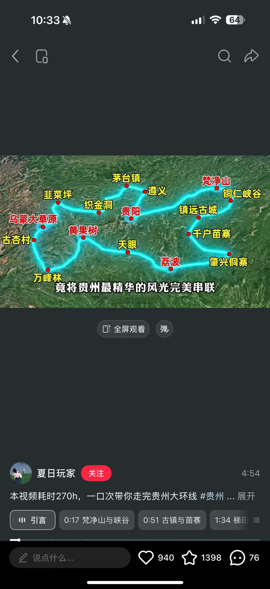

2026.9.26 – 10.2 · 温州 ⇄ 贵阳 · 全程自驾

| 日期 | 白天 | 傍晚/晚间 | 住宿 |
|---|---|---|---|
| 9/26 | 取车 → 🏯 镇远（3h），古镇+夜景 | 🚗 →梵净山（1.5h） | 梵净山 |
| 9/27 | ⛰️ 梵净山全天 | 🚗 →西江（2.5h） | 西江 |
| 9/28 | 🏘️ 苗寨晨雾+全天漫游 | 🚗 →荔波（3.5h） | 荔波 |
| 9/29 | 💧 大小七孔全天 | 🚗 →安顺（4h） | 安顺 |
| 9/30 | 🌊 黄果树全天 | 🚗 →贵阳（1.5h） | 贵阳 |
| 10/1 | 🛶 南江大峡谷漂流 | — | 贵阳 |
| 10/2 | 🏛️ 贵州省博物馆 → 逛吃 | — | 🏠 |
四方井巷（15min）→ 复兴巷（15min）→ 冲子口巷（10min）→ 祝圣桥（10min）→ 沿河走回（10min）
📍 镇远老味道 — 豆花烤鱼
🌙 饭后沿河边往祝圣桥方向走，官方夜游码头上船（¥60/人，约 40min），两岸灯火倒映水面，比白天更有味道。
📍 東谷观麓 · 温馨大床房 · 距梵净山 900m · 免费停车
⚠️ 提前准备：梵净山门票 9/24 早上 7 点预约（微信「梵净山生态旅游区」），约 9/27 最早时段。
东门入园 → 缆车（20min）→ 森林栈道 → 蘑菇石
↓
┌────────────┴────────────┐
↓ ↓
老金顶（2494m） 红云金顶（2336m）⭐
↓ ↓
└────────────┬────────────┘
↓
承恩寺 → 缆车下山
山上只有小卖部，建议自带干粮。下山后在江口县城或寨沙侗寨吃饭。
| 推荐 | 菜 | 人均 |
|---|---|---|
| 寨沙侗寨农家乐 | 社饭、江口米豆腐 | ¥40–60 |
| 档次 | 推荐 | 参考价 |
|---|---|---|
| 观景民宿 | 西江998客栈、西江想宿 | ¥350–550 |
| 经济 | 苗寨内老房子客栈 | ¥180–280 |
💡 住半山腰观景台附近！ 躺在床上看万家灯火。不要住山脚，什么都看不到。
🍺 找家半山腰咖啡馆，对着苗寨发呆一小时。晚上的万家灯火 D2 已经看了，今天看够白天的苗寨。
| 推荐 | 菜 | 人均 |
|---|---|---|
| 侯家庄 | 酸汤牛肉、腊肉拼盘 | ¥60 |
| 草堂茶居 | 喝茶+简餐，观景位 | ¥50 |
| 路边摊 | 现打糍粑裹黄豆粉 | ¥5 |
| 档次 | 推荐 | 参考价 |
|---|---|---|
| 舒适 | 荔波山水皇家驿栈、荔波饭店 | ¥300–500 |
| 经济 | 荔波古镇内民宿 | ¥150–250 |
西门进 → 卧龙潭 → 鸳鸯湖 → 翠谷瀑布 → 水上森林 → 拉雅瀑布 → 68级跌水瀑布 → 小七孔古桥 → 东门出
💡 鸳鸯湖划船和水上森林是两个男生会觉得好玩的地方，不要跳过。9:30 之后旅行团涌入，7:30 必须到门口。
| 推荐 | 菜 | 人均 |
|---|---|---|
| 瑶家土菜馆 | 酸肉、竹筒饭 | ¥50 |
| 荔波古镇夜市 | 烤鱼、冰粉 | ¥40 |
| 档次 | 推荐 | 参考价 |
|---|---|---|
| 舒适 | 安顺百灵希尔顿逸林 | ¥350–500 |
| 经济 | 安顺市区连锁酒店 | ¥150–250 |
🍜 安顺夜市是此行最强美食阵地！ 入住后直奔儒林路 / 新天地美食街。夺夺粉、裹卷、烤小肠，绝了。
💡 8:00 前到天星桥入口。国庆前一天人少，7:40 第一波进体验更佳。带雨衣！水帘洞必湿。
景区门口随便吃，或者撑到下午回贵阳吃。
| 档次 | 推荐区域 | 参考价 |
|---|---|---|
| 市中心 | 喷水池 / 大十字附近 | ¥300–500 |
| 性价比 | 花果园 / 观山湖区 | ¥200–350 |
住喷水池附近，去哪都方便。
| 夜市 | 必吃 |
|---|---|
| 青云路夜市 | 丝娃娃、肠旺面、烤脑花 |
| 二七路小吃街 | 集中式小吃一条街 |
同前一天酒店，连住两晚不折腾。
⚠️ 提前一天确认南江大峡谷国庆是否开放漂流，如遇停漂则改为市区深度游。
💡 最后一天的博物馆反而最适合收尾——前六天看了山、水、寨、瀑、洞，最后用博物馆把贵州的文化脉络串一遍，体验完整。
| 推荐 | 菜 | 人均 |
|---|---|---|
| 南门口肠旺面 | 肠旺面 + 脆哨 | ¥20 |
| 老凯里酸汤鱼 | 酸汤鱼（如果前面没吃够） | ¥80 |
| 丝恋红汤丝娃娃 | 丝娃娃（连锁品质稳） | ¥50 |
| 但家香酥鸭 | 香酥鸭（可外带伴手礼） | ¥30 |
🛍️ 伴手礼：但家香酥鸭、脆哨（丁家脆哨）、刺梨干，都是贵阳特产，机场也能买。
| 城市 | 必吃 | 亮点 |
|---|---|---|
| 🏯 镇远 | 豆花烤鱼、道菜扣肉 | 两人一条鱼刚好 |
| ⛰️ 梵净山 | 社饭、江口米豆腐 | 山脚寨子吃 |
| 🏘️ 西江 | 酸汤牛肉、腊肉、糍粑 | 火锅两个人很爽 |
| 💧 荔波 | 酸肉、竹筒饭、冰粉 | |
| 🌊 安顺 | 夺夺粉、裹卷、烤小肠 | 🏆 此行最佳夜市 |
| 🏙️ 贵阳 | 丝娃娃、肠旺面、青岩卤猪脚、牛肉粉 | 遍地都是 |
| 路段 | 时长 | 高速费约 |
|---|---|---|
| 贵阳机场 → 镇远 | 3h | ¥80 |
| 镇远 → 梵净山 | 1.5h | ¥40 |
| 梵净山 → 西江 | 2.5h | ¥70 |
| 西江 → 荔波 | 3.5h | ¥90 |
| 荔波 → 安顺 | 4h | ¥100 |
| 安顺 → 黄果树 | 40min | ¥15 |
| 黄果树 → 贵阳 | 1.5h | ¥50 |
| 贵阳 → 南江大峡谷 | 1h | ¥25 |
| 贵阳市区 → 机场 | 30min | — |